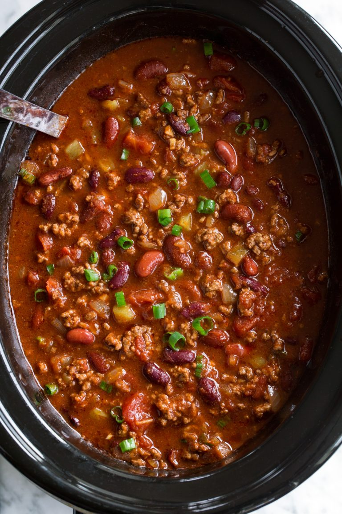

Slow Cooker Chili

Description
The leaves are falling and a hearty meal would hit the spot. This is where my slow cooker chili recipe comes in handy. This dish requires minimal prep time which means that you can spend your day relaxing out in the cool, fall weather and coming back in to enjoy a piping hot bowl of chili.
Ingredients
- 1 tablespoon olive oil
- 2 pounds lean ground beef
- 1 large yellow onion, finely chopped
- 3 cloves garlic, finely minced
- 2 cans diced tomatoes with green chilies 14.5 ounce cans
- 3 cans tomato sauce 8 ounce cans
- 1/2 cup beef broth
- 2 tablespoons chili powder
- 2 1/2 teaspoons ground cumin
- 2 teaspoons paprika
- 2 teaspoons unsweetened cocoa powder
- 1 teaspoon granulated sugar
- 1/2 teaspoon ground coriander
- Salt and freshly ground black pepper
- 1 can dark red kidney beans, drained and rinsed 15 oz can
- 1 can light red kidney beans, drained and rinsed 15 oz can
- Shredded cheddar cheese, for serving
Steps
- Heat olive oil in a large and deep non-stick skillet over medium-high heat.
- Add onion and saute 3 minutes, then add garlic and saute 30 seconds longer. Pour onions into a 6 or 7 quart slow cooker
- Return skillet to medium-high eat, add beef and cook stirring occasionally until beef has browned.
- Drain most of fat from beef, leaving about 2 Tbsp in with beef (this is optional, I think it ads flavor but you can drain it all if you'd prefer). Pour browned beef into slow cooker.
- Stir in diced tomatoes, tomato sauce, beef broth, chili powder, cumin, paprika, cocoa powder, sugar, coriander and season mixture with salt and pepper to taste.
- Cover with lid and cook on low heat for 5 - 6 hours.
- Stir in dark and light red kidney beans and allow to heat through, about 2 minutes. Serve warm with desired toppings.